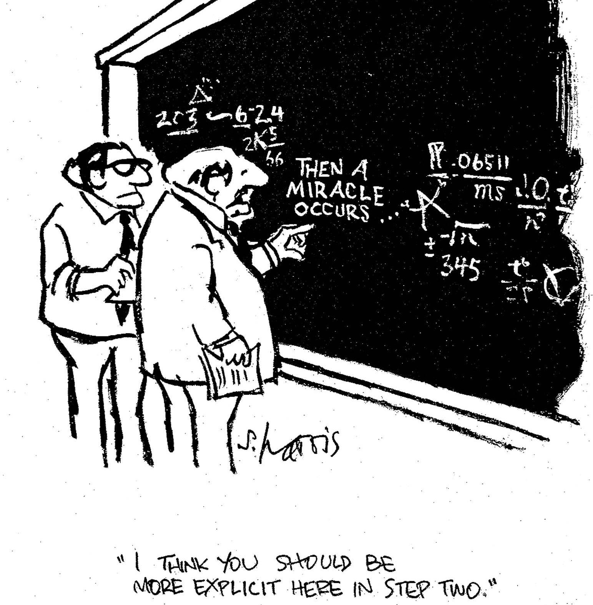
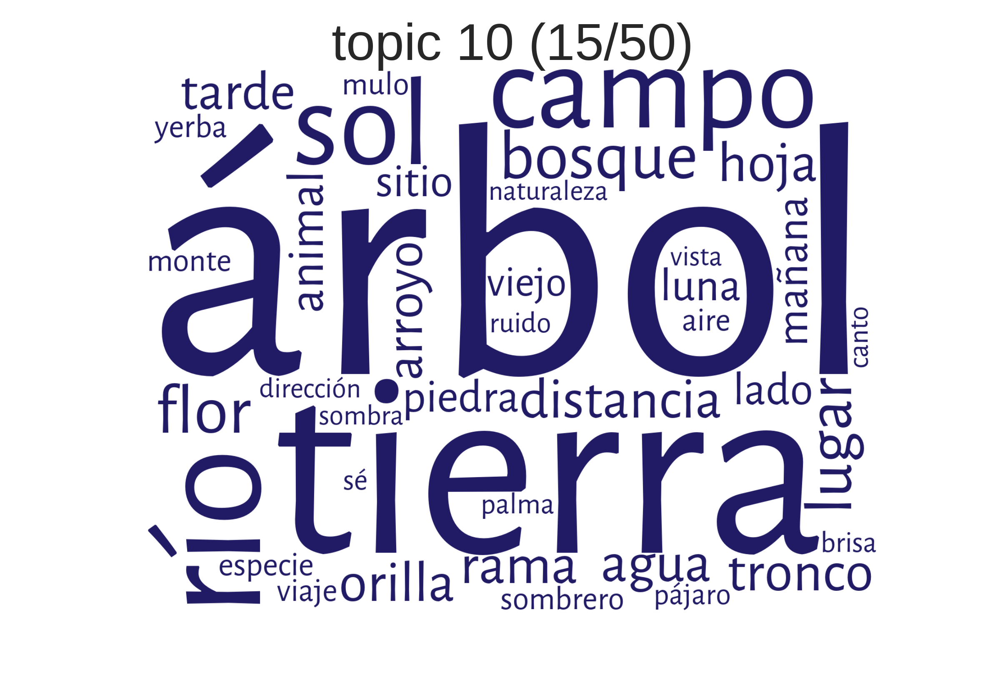
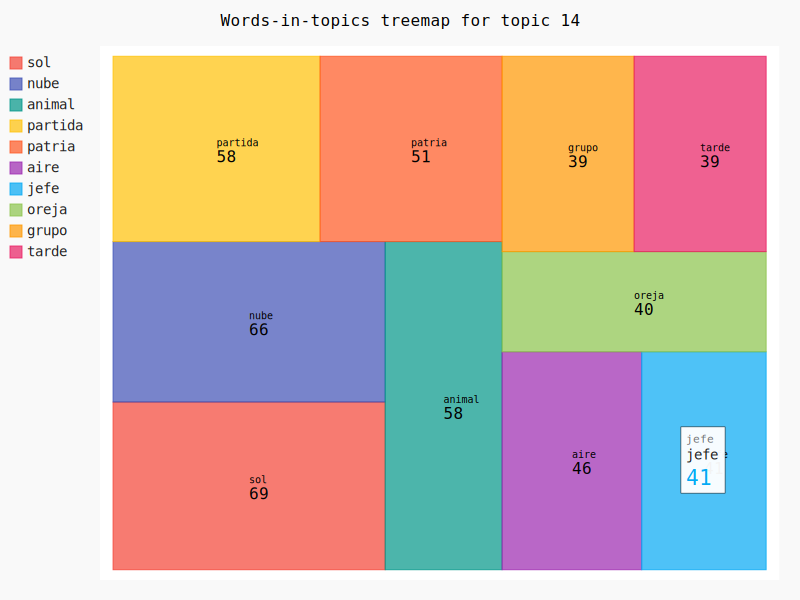
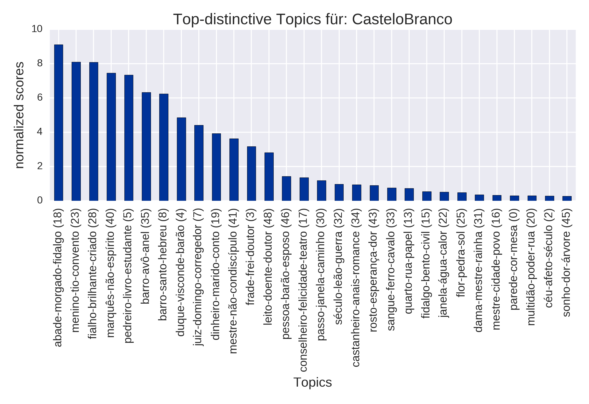

Einführung in Topic Modeling
Ulrike Henny-Krahmer
(CLiGS, Universität Würzburg)
DH-Workshop an der Eberhard Karls Universität Tübingen
9. Februar 2018
Folien unter: https://hennyu.github.io/tub_18/


Übersicht
- Einführung
- MALLET verwenden
- Workflow: Vorbereitung des Korpus, Nachbereitung, Visualisierung und Interpretation der Ergebnisse
1. Topic Modeling: Eine Einführung
1. Topic Modeling: Eine Einführung
- a) Was ist Topic Modeling und wie funktioniert es?
- b) Anwendungsbereiche
a) Was ist Topic Modeling und wie funktioniert es?
Was ist Topic Modeling?
"Topic modeling is complicated and potentially messy but useful and even fun. The best way to understand how it works is to try it."(Megan R. Brett, "Topic Modeling: A Basic Introduction")
Was ist Topic Modeling?
- Topic Modeling ist eine quantitative Methode für Textanalyse
- In einem Korpus von Dokumenten werden statistisch Wortverteilungen ermittelt
- Topic Modeling ist besonders nützlich für große Textsammlungen
Das Ziel von Topic Modeling ist es...
..."versteckte" semantische Strukturen zu entdecken.
Wie funktioniert Topic Modeling?
Grundidee aus der Distributionellen Semantik:
"a word is characterized by the company it keeps"(John Firth, 1957)
Wie funktioniert Topic Modeling?
- Mit Topic Modeling werden wiederkehrende Themen, Motive, Diskurse automatisch identifiziert
- wichtig: das geschicht ohne explizites semantisches Wissen!
Woher kommt Topic Modeling?
- Topic Modeling ist vor allem auf empirischer Grundlage entwickelt worden
- ursprünglich für Information Retrieval entwickelt (Suche nach Dokumenten anhand von Themen)
- aktuelle Methode (meist verwendet): LDA (Latent Dirichlet Allocation), 2003
Wie funktioniert Topic Modeling?
Grundidee:
- Ermittlung von Wörtern, die immer wieder zusammen vorkommen (= in ähnlichen Kontexten) ⇒ Topics
- Berechnung, wie wichtig jedes Topic in jedem Dokument ist
Wie funktioniert Topic Modeling?
etwas technischer:
- ein Topic ist eine Wahrscheinlichkeitsverteilung über Wörter
- ein Dokument ist eine Wahrscheinlichkeitsverteilung über Topics
Wörter, Topics, Dokumente

Generativ, iterativ
generativ
- Im Zentrum der Technik steht ein generatives Modell
- Wie hätten die Dokumente entstehen können?
iterativ
für jedes __Dokument__ in der Sammlung:
wähle eine Topic-Verteilung
für jedes __Wort__ im Dokument:
wähle ein Topic, zu dem das Wort gehört
wähle ein Wort aus dem Topic
wiederhole den ganzen Prozess!
Generativ, iterativ

Generativ, iterativ

Und so funktioniert es wirklich:

Und so funktioniert es wirklich...
Begriffe und Konzepte
Der Prozess mag eine "Black Box" sein.
Aber die Ergebnisse nicht.
Auch nicht, was man in den Prozess hineingibt!
Wort, Topic, Dokument haben im Topic Modeling eine besondere Bedeutung
Begriffe und Konzepte
words
- Tokens: etwa Einheiten der Wortebene
- Sätze werden "tokenisiert"
- Tokens sind nicht immer Wörter
- "Topic Modeling" kann auch ein Token sein
Begriffe und Konzepte
Dokumente
- nicht: Sequenzen von Wörtern mit Satzzeichen
- sondern: eine Sammlung von Wortzählungen
- z.B. ["sein" : 2, "oder" : 1, "nicht" : 1]
Begriffe und Konzepte
corpus
- eine Sammlung von Dokumenten
Begriffe und Konzepte
Topics
- im zugrundeliegenden Modell sind sie nicht unbedingt das, worum es in einem Text geht
- technisch: eine Wahrscheinlichkeitsverteilung über ein Wort-Vokabular
- (Vokabular: die Menge aller verschiedenen Wörter im Korpus)
Begriffe und Konzepte
wichtig: bevor man mit dem Topic Modeling beginnt, entscheidet man selbst, was ein Wort und was ein Dokument ist!
Wie kann man Topics verstehen?
- Themen von Texten
- Elemente des Diskurses
- Literarische Motive
- ... ?
Wie kann man Topics verstehen?
Beispiele aus einem Korpus hispanoamerikanischer Romane"Schule"

Wie kann man Topics verstehen?
Beispiele aus einem Korpus hispanoamerikanischer Romane"Reise"

Wie kann man Topics verstehen?
Beispiele aus einem Korpus hispanoamerikanischer Romane"Französische Intervention in Mexiko (1861-1867)"

Wie kann man Topics verstehen?
Beispiele aus einem Korpus hispanoamerikanischer Romane"Landschaftsbeschreibung"
Wie kann man Topics verstehen?
andere Möglichkeit der Visualisierung für Wörter in Topics
Wie kann man Topics verstehen?
Visualisierung von Topics in Dokumenten

Roberto Payró, El falso Inca (Argentina, 1905)
b) Anwendungsbereiche
Anwendungsszenarien
- Information Retrieval: Suche nicht nach einzelnen Begriffen, sondern nach Themen / semantischen Feldern
- Recommender Systems: Vorschläge von semantisch ähnlichen Forschungsartikeln
- Exploration von Textsammlungen
- Fragen aus der Literatur- und Kulturgeschichte
Forschungsbeiträge
- Cameron Blevins: "Topic Modeling Martha Ballard's Diary" (2010): Tagebuch, über die Zeit
- Ted Underwood und Andrew Goldstone (2012): "What can topic models of PMLA teach us...": Wissenschaftsgeschichte
- Lisa Rhody, "Topic Modeling and Figurative Language" (2012): Dichtung, Ekphrasis
- Matthew Jockers, Macroanalysis (2013): Roman, Nationalität, Gender
- Ben Schmidt: "Typical TV episodes" (2014): TV-Serien, über die Sendezeit
- Christof Schöch, "Topic Modeling Genre" (2017): Drama, Untergattungen
Beispiel: Cameron Blevins: "Topic Modeling Martha Ballard's Diary" (2010)
Topic Modeling Martha Ballard's Diary
- Tagebuch einer Hebamme aus Maine, zwischen 1785 und 1812 geführt
- von Cameron Blevins mit Text-Mining-Methoden analysiert
- Zuvor: Monographie "A Midwife's Tale" von Laurel Ulrich
- Tagebuch:
- fast 10.000 Einträge
- fast tägliche Notizen
Topic Modeling Martha Ballard's Diary
Ulrich: “The problem is not that the diary is trivial but that it introduces more stories than can be easily recovered and absorbed.”
Blevins: “how does a reader (computer or human) recognize and conceptualize the recurrent themes that run through nearly 10,000 entries?“
“One answer lies in topic modeling“
“in the case of Martha Ballard’s diary, it worked. Beautifully“
Topic Modeling Martha Ballard's Diary
Mallet, 30 Topics, hier ein Sample (Top 20 Wörter, von Blevins mit Titeln versehen):
- MIDWIFERY: birth deld safe morn receivd calld left cleverly pm labour fine reward arivd infant expected recd shee born patient
- CHURCH: meeting attended afternoon reverend worship foren mr famely performd vers attend public supper st service lecture discoarst administred supt
- DEATH: day yesterday informd morn years death ye hear expired expird weak dead las past heard days drowned departed evinn
- GARDENING: gardin sett worked clear beens corn warm planted matters cucumbers gatherd potatoes plants ou sowd door squash wed seeds
- SHOPPING: lb made brot bot tea butter sugar carried oz chees pork candles wheat store pr beef spirit churnd flower
- ILLNESS: unwell mr sick gave dr rainy easier care head neighbor feet relief made throat poorly takeing medisin ts stomach
Topic Modeling Martha Ballard's Diary
Blick in ein Dokument (Tagebucheintrag vom 28. November 1795):
“Clear and pleasant. I am at mr Pages, had another fitt of ye Cramp, not So Severe as that ye night past. mrss Pages illness Came on at Evng and Shee was Deliverd at 11h of a Son which waid 12 lb. I tarried all night She was Some faint a little while after Delivery.”
→ dominantes Topic MIDWIFERY (passt)
Topic Modeling Martha Ballard's Diary
Blevins: „The power of topic modeling really emerges when we examine thematic trends across the entire diary.“
|
COLD WEATHER-Topic cold windy chilly snowy air... |
Topic Modeling Martha Ballard's Diary
zwei HOUSEHOLD-Topics über die Zeit
| Warum Anstieg am Ende? |
Topic Modeling Martha Ballard's Diary
Blevins Fazit:
„I am absolutely intrigued by the potential for topic modeling in historic source material. In many ways, it seems that Martha Ballard’s diary is ideally suited for this kind of analysis. Short, content-driven entries that usually touch upon a limited number of topics appear to produce remarkably cohesive and accurate topics.“
2. MALLET verwenden
Übersicht: Tools
| Name | Entwickler | Programmiersprache | Link | ||
|---|---|---|---|---|---|
| MALLET | machine learning for language toolkit |  |
Andrew McCallum et al. | Java | http://mallet.cs.umass.edu/topics.php |
| Gensim | topic modeling for humans | |
Radim Řehůřek | Python | https://radimrehurek.com/gensim |
| tmw | topic modeling workflow |  |
Christof Schöch | Python | https://github.com/cligs/tmw |
| dfr-browser | a simple topic-model browser |  |
Andrew Goldstone | JavaScript | http://agoldst.github.io/dfr-browser/ |
MALLET
- MALLET (Machine Learning for Language Toolkit, https://github.com/mimno/Mallet): für das eigentliche Topic Modeling
Parameter in MALLET
Modellierung:
- Anzahl der Topics
- Anzahl der Iterationen
- Modus für Optimierung
MALLET verwenden
wo wir stehen:
- MALLET ist installiert (und wir wissen, in welchem Verzeichnis!)
- Wir haben ein Arbeitsverzeichnis (darin heruntergeladene Materialien) mit:
- einem Unterordner mit einem Textkorpus
- einer Textdatei mit einer Stopword-Liste
- einem Unterordner für den Output ("model/")
MALLET aufrufen
Zwei Schritte:
- import
- wandelt alle Textdateien in ein MALLET-Korpusformat um
- berücksichtigt die Stopwords
- schreibt eine binäre Datei
- train-topics
- führt das eigentliche Topic-Modeling durch
- es werden Output-Dateien geschrieben
MALLET "import"
- sage dem Computer: verwende MALLET
- sage MALLET: importiere die Texte (import-dir) und
- ... wo sind die Textdateien (--input)
- ... wo soll das importierte Korpus gespeichert werden (--output)
- ... entferne Stopwords (--remove-stopwords)
- ... verwende die Stopwords aus einer Stopwords-Datei (--stoplist-file)
- ... lege als Ausgabeformat eine Sequenz fest (--keep-sequence)
- ... lege fest, wie tokenisiert werden soll (--token-regex)
MALLET "import" (Linux, Mac)
/home/ulrike/Programme/mallet-2.0.8RC3/bin/mallet
import-dir --input TM/Korpora/es/texts
--output TM/Korpora/es/model.mallet
--remove-stopwords TRUE
--stoplist-file TM/Korpora/es/stopwords.txt
--keep-sequence TRUE
--token-regex "\p{L}+"
MALLET "import" (Windows)
(mit dem cmd-Terminal; von C:\Programs\mallet\ aus)
bin\mallet
import-dir
--input C:\Users\[USER]\Desktop\TM\Korpora\es\texts
--output C:\Users\[USER]\Desktop\TM\Korpora\es\model.mallet
--remove-stopwords TRUE
--stoplist-file C:\Users\[USER]\Desktop\TM\Korpora\es\stopwords.txt
--keep-sequence TRUE
--token-regex "\p{L}+"
MALLET "train-topics": das Topic-Modell trainieren
- sage dem Computer: verwende MALLET
- sage MALLET: modelliere (train-topics) und
- ... wo die Korpusdatei ist (--input)
- ... wie viele Topics es geben soll (--num-topics)
- ... wie häufig optimiert werden soll (--optimize-interval)
- ... wie viele Wörter in den Topics gezeigt werden sollen (--num-topic-words)
- ... den Pfad zum Output "words-with-topics" (--output-topic-keys)
- ... den Pfad zum Output "topics-per-document" (--output-doc-topics)
- ... den Pfad zum Output "words-by-topics" (--topic-word-weights-file)
MALLET "train-topics" (Linux, Mac)
/home/ulrike/Programme/mallet-2.0.8RC3/bin/mallet train-topics
--input TM/Korpora/es/model.mallet
--num-topics 30
--optimize-interval 50
--num-iterations 500
--num-top-words 30
--output-topic-keys TM/Korpora/es/model/topics-with-words.txt
--output-doc-topics TM/Korpora/es/model/topics-in-texts.txt
--topic-word-weights-file TM/Korpora/es/model/word-weights.txt
MALLET "train-topics" (Windows)
bin\mallet
train-topics
--input C:\Users\[USER]\Desktop\TM\Korpora\es\model.mallet
--num-topics 30
--optimize-inteval 50
--num-iterations 500
--num-top-words 30
--output-topic-keys C:\Users\[USER]\Desktop\TM\Korpora\es\model\topics-with-words.txt
--output-doc-topics C:\Users\[USER]\Desktop\TM\Korpora\es\model\topics-in-texts.txt
--topic-word-weights-file C:\Users\[USER]\Desktop\TM\Korpora\es\model\word-weights.txt
Die Ergebnisse anschauen
- Die Output-Dateien, die generiert wurden (= das fertige Topic-Modell), öffnen und ansehen
- womit? Tabellen-Programm wie Calc/Excel oder einfaches Textprogramm)
- ggf. Dateien umbenennen, so dass sie mit ".csv" enden
3. Workflow: Vorbereitung des Korpus, Nachbereitung, Visualisierung und Interpretation der Ergebnisse
Übersicht über den Workflow

(Mallet und Python; siehe http://github.com/cligs/tmw.)
a) Vorbereitung des Korpus
- nötig: Texte
- Textauswahl
- optional: Metadaten
- optional: Natural Language Processing
nötig: Texte
- für Topic Modeling braucht man Volltexte
- möglichst viele Texte
- Metadaten zu den Texten sind sinnvoll
Fragen zu den Texten
Gibt es in den Texten Variation in der Orthographie? Ist eine Normalisierung nötig?
Wie gut sollte man die Texte schon kennen?
⇒ Was ist die Forschungsfrage?
Fragen zur Textauswahl
- Welche Arten von Texten sollen im Korpus enthalten sein?
- Wie viele Texte sollten es sein?
- Wie lang sollten oder können die Texte sein?
Welche Arten von Texten?
Zu bedenken:
- ein Topic-Modell ist vor allem ein Modell einer Text-Sammlung
- es ist möglich, dass ein Topic nicht mehr allzu viel mit einem einzelnen Text zu tun hat
- Vergleichbarkeit ist wichtig (Sprache, Gattung, Epoche, Autoren)
- Verfügbarkeit
Wie viele Texte?

Wie viele Texte?

Textumfang/-länge?
- ideal: ähnlicher Textumfang
- noch keine verbindlichen Antworten
- möglich: Segmentieren von Texten, (Kombinieren von Texten)
Metadaten zu den Texten
- zum Beispiel: Autor, Titel, Jahr der Veröffentlichung, Autor-Gender, Gattung des Textes, literarische Strömung, Erzählperspektive, etc.
- übliches Format: CSV (comma-separated values)
Metadaten
Beispiel
Natural Language Processing
Text als linguistischer Code
ist die Grundlage für
- Distant Reading
- Text Mining
- Topic Modeling!
Natural Language Processing
- Tokenisierung
- Lemmatisierung
- Part-of-Speech-Tagging
- Stopword-Listen
Part-of-speech tagging
Beispiel: TreeTagger
Stopwords
- Wörter, die entfernt werden sollten, bevor der Text weiter verarbeitet wird
- sehr häufige Wörter können dazu führen, dass die Ergebnisse nicht so aussagekräftig sind
- zum Beispiel:
- Funktionswörter wie Artikel, Konjunktionen, Präpositionen
- Nomen, die semantisch unspezifisch sind (z.B. "Sache", "Ding")
- Eigennamen (z.B. in Romanen)
Stopword-Listen
- oft Teil von Text-Mining- oder NLP-Software
- oder allgemeine Listen für einzelne Sprachen
- oder für ein spezifisches Korpus generiert, z.B.:
- die häufigsten Wörter (MFW, most frequent words)
- alle Funktionswörter
- alle Eigennamen
- ...
b) Nachbereeitung
nach dem Topic-Modeling:
- Zusammenführen der Ergebnisse mit den Metadaten
- Visualisierung
- Interpretation
- Evaluation
Visualisierungsoptionen in tmw
anhand eines Beispiels:
30 portugiesische Romane,
siehe https://github.com/cligs/textbox
Wortwolken (make_wordle_from_mallet)

Top Topics, normalisiert (plot_topTopics)
für den Autor Camilo Castelo Branco
Top Items (plot_topItems)
nach Untergattung

Top Items (plot_topItems)
nach Erzählperspektive
Heatmap (plot_distinctiveness_heatmap)
distinktive Topics für verschiedene Untergattungen

Interpretation und Evaluation
Wie interpretierbar sind die Ergebnisse?
- Ein Topic Model kann Topics hervorbringen, die nach Themen aussehen.
- Es können aber auch andere Arten semantischer Relationen sichtbar werden: Motive, Redeweisen, …
- Oder es ist kein semantischer Zusammenhang erkennbar.
- Bei einer Interpretation sollten möglichst alle Ergebnisse des Topic Models berücksichtigt werden.
Interpretation und Evaluation
Wie können die Ergebnisse evaluiert werden?
- Zufälligkeit der Ergebnisse
- Evaluation von Topic Models - was wird erwartet?
- z.B. semantische Kohärenz von Topics
- dass Topic Models die Dokumente „gut“ beschreiben
- (dass das Modell sich gut für andere Aufgaben einsetzen lässt)
Wie kann das überhaupt gemessen werden?
Fazit
Fazit
- Topic Modeling ist relativ einfach einzusetzen, es fehlt derzeit aber vor allem noch an Werkzeugen, welche die Modellierung selbst um Vor- und Nachbereitung ergänzen.
- Entscheidungen hinsichtlich Korpus und Modell beeinflussen Art und Qualität der Ergebnisse.
Fazit
- Eine Topic Modeling-Analyse ist vor allem distant reading.
- Topic Modeling kann:
- der Erschließung großer Textsammlungen dienen
- einen neuen Blick auf Texte ermöglichen
- aufdecken, wie Themen in Sammlungen literarischer Texten entfaltet werden
Fazit
- Ein Topic Model ist vor dem Hintergrund der Methode zu sehen!
- Wie die Ergebnisse an traditionelle Fragen angebunden werden können, ist noch weitgehend offen.
Fazit
„As Stephen Ramsay argues in Reading Machines, using algorithms need not propel us towards applying an ersatz scientific and scientistic evidentiary standard to literary interpretation, but rather should reveal and perhaps help amplify our already part-algorithmic literary-critical reading practices, the regular sets of protocols and procedures of analog literary criticism with which we are very—perhaps sometimes too—familiar“
(Rachel Sagner Buurma: The Fictionality Of Topic Modeling: Machine Reading Anthony Trollope's Barsetshire Series)
Diskussion, Fragen, Kommentare, Ideen?
Literaturhiweise
Theorie und Methode
- Blei, D. M. (2012). "Probabilistic topic models". In: Communications of the ACM, 55(4): 77–84. http://www.cs.princeton.edu/~blei/papers/Blei2012.pdf
- Steyvers, M. and Griffiths, T. (2006). "Probabilistic Topic Models". In: Landauer, T. et al. (eds), Latent Semantic Analysis: A Road to Meaning. Laurence Erlbaum.
- Weingart, S. (2012). "Topic Modeling for Humanists: A Guided Tour". In: The Scottbot Irregular. http://www.scottbot.net/HIAL/?p=19113
Literaturhinweise
Beispiele von Topic Modeling-Analysen
- Blevins, C. (2010). "Topic Modeling Martha Ballard’s Diary". In: Historying. http://historying.org/2010/04/01/topic-modeling-martha-ballards-diary/
- Jockers, M. L. (2013). Macroanalysis - Digital Methods and Literary History. Champaign, IL: University of Illinois Press.
- Rhody, L. M. (2012). "Topic Modeling and Figurative Language". In: Journal of Digital Humanities, 2(1) http://journalofdigitalhumanities.org/2-1/topic-modeling-and-figurative-language-by-lisa-m-rhody/
- Schöch, C. (2016). "Topic Modeling Genre: An Exploration of French Classical and Enlightenment Drama". In: Digital Humanities Quarterly. http://digitalhumanities.org/dhq/
- Underwood, T. and Goldstone, A. (2012)." "What can topic models of PMLA teach us about the history of literary scholarship?" In: The Stone and the Shell. http://tedunderwood.com/2012/12/14/what-can-topic-models-of-pmla-teach-us-about-the-history-of-literary-scholarship/
Literaturhinweise
Tools
- dfr-browser: http://agoldst.github.io/dfr-browser/
- Gensim: https://radimrehurek.com/gensim
- MALLET: http://mallet.cs.umass.edu/topics.php
- LDAvis Demo: http://www.kennyshirley.com/LDAvis/
- Serendip: http://vep.cs.wisc.edu/serendip/
- tmw: https://github.com/cligs/tmw
Vielen Dank!
Folien unter: https://hennyu.github.io/tub_18/
tmw (next): https://github.com/cligs/tmw/tree/next
CLiGS: http://cligs.hypotheses.de/